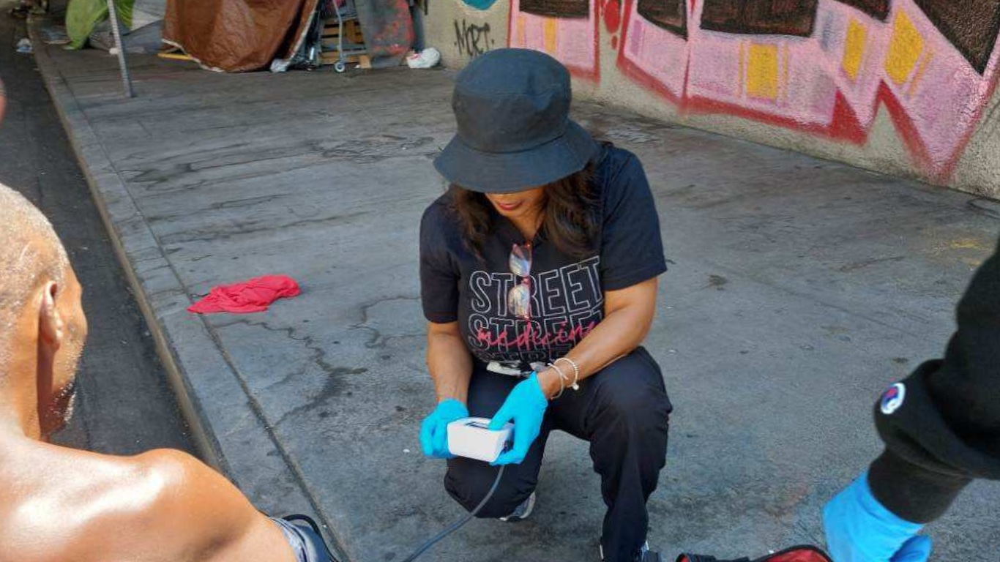

Why we run research
Being insured is not the same as getting care.
Most people we surveyed in Skid Row have health coverage. Most still cannot reliably see a doctor. That gap is why this program exists, and it shapes where we deploy.
Street medicine reaches people the clinic system does not. Our field surveys make that community's own account of care the basis for how services get designed, funded, and evaluated. Everything below is their data.

Field operation in Skid Row. Intake, screening, and wound care.
Findings, Skid Row survey
What residents told us.
Reported having health insurance. Of those, 74.6% were covered by Medi-Cal.
Still said accessing medical services is challenging. The leading reasons were transportation and problems with insurance.
Found street medicine helpful, with a further 13.0% saying sometimes helpful.
Said they were somewhat or very likely to use street medicine again. 75.8% said very likely.
Of those who received street medicine care had only ever received those services on the street.
Of those reporting distrust of doctors cited dismissal of symptoms or perceived discrimination.
What residents asked for
The requests are rarely only clinical.
Respondents could choose more than one service. Food and housing outrank every medical category, which is why our teams carry referrals as well as supplies.
Someone who needs a wound dressed usually needs a meal and a bed first. Ranking the requests in one list, in their own order, is what keeps a medical visit from being the only thing on offer.
HIV self-test distribution
Putting the test in someone's hand changes who gets tested.
HIV testing and counseling was the third most requested service in Skid Row. We ran an OraQuick self-test distribution alongside outreach to meet it.
115 people received kits between January and August 2024. Distribution reached an older population than street outreach usually records, with the largest group aged 40 to 49.
A self-test removes the appointment, the identification requirement, and the waiting room in a single step.
Survey administered on 4th Street. Interviews were conducted in person so that people who cannot read, write, or use a phone were not excluded.
Method
How the survey was run.
Participants were approached throughout Skid Row and gave oral consent. Inclusion required being 18 or older, able to consent, fluent in English or Spanish, and either unhoused or living in a Skid Row housing facility.
Surveys were conducted as interviews rather than forms, so people who cannot read, write, or use a phone were not excluded. Participation was voluntary, any question could be skipped, and no compensation was offered. No identifying information was collected.
Study parameters
- Participants
- 75
- Period
- October 2024 to February 2025
- Format
- Interview-administered, English and Spanish
- Consent
- Oral, voluntary, uncompensated
- Identifiers
- None collected
- Ethics
- Certified exempt from IRB review under 45 CFR 46.104 category 2 by the UCLA IRB, determined October 3, 2024
- Published
- February 2025
Publications
Read the work.
Understanding Healthcare Access and Experiences in Skid Row
21 pages covering demographics, healthcare access, requested services, healthcare experiences, and a call to action for street medicine leaders and policymakers.
OraQuick HIV Self-Test Distribution
Distribution data for 115 recipients across January to August 2024, including prior testing history and demographics.
Outreach team on site. Volunteers, nursing and medical students, and clinical staff deploy together.
Join the work
Field experience you cannot get in a classroom.
Street medicine puts students and volunteers alongside clinicians in the field, doing real work: intake, screening, supply runs, and survey collection. Nursing, medical, public health, and social work students have all deployed with SMO.
Become a volunteer
Every HMC volunteer completes Community Mental Health Worker training, parts one and two. Street medicine requires additional training beyond that onboarding, because the field environment asks more of you.
- Supervised field hours alongside clinical staff
- Training tracked in your volunteer record
- Recurring deployments, not one-off shifts
Send what the teams carry
Outreach runs on consumables. Socks and hygiene items go out faster than anything else we carry, and wound care was the ninth most requested service in our own survey.
Clinical items are coordinated directly with the team. Email before shipping anything medical so it matches what is actually needed and in date.
Donate
A donation buys the supplies above and keeps deployments on a regular schedule rather than an occasional one. Consistency is what builds trust on the street, and trust is what the survey shows is missing.
Most needed, no coordination required
- New socks, adult sizes
- Hygiene kits: soap, toothbrush, toothpaste, deodorant
- Bottled water and shelf-stable snacks
- Sunscreen and lip balm
- Feminine hygiene products
- Reusable bags and ponchos
- Blankets and emergency mylar blankets
Basic first aid, unopened and in date
- Adhesive bandages and gauze pads
- Medical tape and elastic wrap
- Saline wound wash
- Antibiotic ointment packets
- Nitrile gloves, sizes M and L
- Hand sanitizer
Coordinate with us first
- Anything requiring a prescription or a license to distribute
- Test kits and screening supplies
- Diagnostic equipment
- Bulk pallets or anything needing storage
Email contact@healthmatters.clinic before sending any of the above. Unsolicited clinical donations often arrive expired or unusable, and we would rather spend your money well.
Where to send supplies
Ship or drop off during business hours. Tell us it is coming so someone is there to receive it.
Health Matters Clinic
Attention: Street Medicine Outreach
1360 S Figueroa St, Suite D390
Los Angeles, CA 90015
Questions: contact@healthmatters.clinic
For community organizations
Run this survey with your own community.
The instrument, the consent script, and the collection protocol are available to any community-based organization documenting healthcare access in the population it serves. Comparable questions across sites produce something none of us can produce alone.
The full instrument
Survey questions, the oral consent script, and the collection standard operating procedure used in Skid Row.
Comparable data
Keep the core questions intact so results compare across sites. Add your own questions after them.
Shared findings
Contributing organizations are named in the combined report and receive their own site results back.